AVB
AVB
Nejzákladnìjší definice øíká:
| Úhel je èást roviny omezená dvìma polopøímkami se spoleèným poèátkem. |
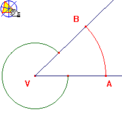
Pøi takto definovaném úhlu si však musíme uvìdomit, že polopøímky VA a VB vymezují dva rùzné úhly a to :AVB
 V jaké poloze musí ležet polopøímky VA a VB, aby vymezovaly dva shodné úhly?
V jaké poloze musí ležet polopøímky VA a VB, aby vymezovaly dva shodné úhly?
Víš, jak takový úhel nazýváme?
| Rovinným úhlem nazýváme množinu všech bodù všech polopøímek VX se spoleèným poèátkem V, kde bod X patøí do daného oblouku AB kružnice k se støedem v bodì V. |
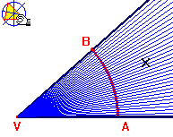
Pokud jste této ponìkud složitìjší a na pøedstavivost nároènìjší definici úhlu zcela neporozumìli, klepnìte na symbol Cabri II a pohybujte s bodem B. V náèrtku nejsou samozøejmì všechny polopøímky VX, to by ani nebylo možné, ale pøi dùkladném prostudování bude jistì i tento náèrtek staèit a mnohé bude jasnìjší.
Osu úhlu mùžeme definovat také pomocí množiny bodù dané vlastnosti takto:
| Osou úhlu nazýváme množinu právì tìch bodù úhlu, které mají od obou ramen úhlu stejnou vzdálenost |
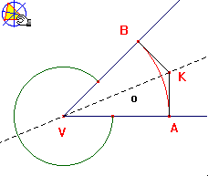
Na obrázku je osa znázornìna jako pøímka o. Osy úhlù kreslíme tenkou èerchovanou èarou.

Sledujte, kam se pøesune bod K, jestliže body A,V,B leží v pøímce.
Jakým postupem byste zkonstruovali osu úhlu ?
| Hodnota obloukové míry úhlu AVB se rovná délce kružnicového oblouku AB, který je prùnikem úhlu AVB a kružnice k se støedem ve vrcholu V a polomìrem 1. Úhlová jednotka obloukové míry se nazývá radián a ozaèuje se rad. |
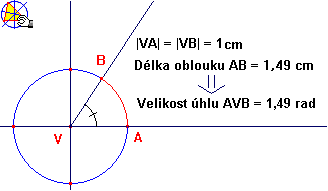
Radián je hlavní jednotkou rovinného úhlu. Patøí mezi tzv. "doplòkové jednotky" mezinárodní soustavy jednotek SI.| Úhlová míra stupòová byla odvozena od rozmìru pravého úhlu, kterému bylo pøiøazeno 90 jednotek. Proto tuto míru nazýváme též devadesátinná míra. Úhlovou jednotkou stupòové míry je 1 stupeò znaèka o. |
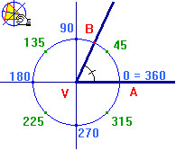
Pro jeden stupeò platí :
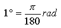

Otevøte si ještì jednou pøedcházející obrázek v Cabri II a pokuste se vytvoøit pøevodní tabulku mezi stupni a radiány pro 30o, 45o, 60o, 90o, 180o, 270o, 360o
Pokusnì odeètené hodnoty ovìøte kontrolním výpoètem podle pøevodního vzorce. Svá mìøení a výpoèty si mùžete zkontrolovat zde.
Radián a úhlový stupeò jsou dvìmi nejpoužívanìjšími jednotkami velikosti úhlu. Ve speciálních vìdních oborech se používají
rovnìž další úhlové jednotky, s nimi se však bìžnì nesetkáte.
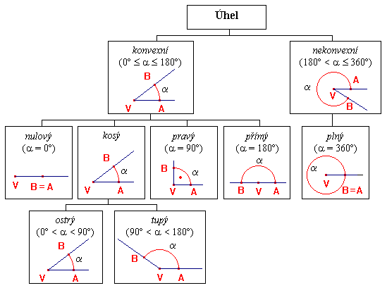
Velikosti jednotlivých speciálních úhlù vyjádøete v radiánech.
Kdo si nebude vìdìt rady, mùže použít pøevodní tabulku. 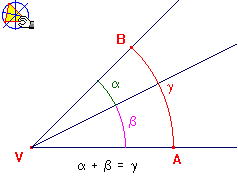
Pozor ! Jestliže a<b, musíme dát pozor na orientaci úhlu. Pokud se chcete tìmto problémùm vyhnout,
poèítejte radìji rozdíl b - a.
Rozdìlení úhlù podle jejich velikosti
Sèítáme a odeèítáme úhly
Graficky
Grafické seètení úhlù a + b provedeme tak, že nejprve k jednomu rameni úhlu a pøeneseme
úhel b mimo úhel a. To znamená, že se oba úhly nepøekrývají, pokud jejich souèet
nepøesáhl 360o. Jejich souèet je tedy úhel, kretý vymezila jejich nesouhlasná ramena.
Pøi odeèítání úhlù a - b postupujeme obdobnì, pouze úhel b pøeneseme dovnitø úhlu a. Výsledný
úhel opìt vytyèují nespoleèná ramena obou úhlù.Poèetnì
Pøi poèítání s úhlovými jednotkami musíme stále myslet na to, že se pohybujeme v šedesátkové soustavì.
Všechny minuty i vteøiny vìtší než 59 musíme pøevádìt.
Zvláštní pozor pozor musíme dávat rovnìž pøi odeèítání úhlu v pøípadì, že poèet minut menšence je menší než poèet minut menšitele.
Podívejme se na operace s úhlovými jednotkami podrobnì a po dùkladném prostudování si je procviète na nìkolika pøíkladech.
Dvojice úhlù
Styèné úhly | |
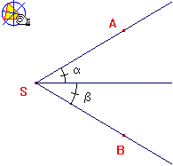 | Styènými úhly nazýváme dva úhly, jejichž souèet velikostí je menší než velikost plného úhlu a jejichž dvì ramena splývají a zbývající dvì ramena
leží ve vzájemnì opaèných polorovinách s hranièní pøímkou obsahující spoleèné rameno. S tímto typem úhlù jsme se již setkali pøi garfickém sèítání úhlù. Abychom mohli dva úhly graficky seèíst, musíme z nich nejprve utvoøit dvojici styèných úhlù. |
Vrcholové úhly | |
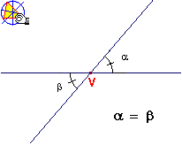 | Vrcholovými úhly nazýváme úhly, jejichž vrcholy splývají a ramena jsou vzájemnì opaèné polopøímky. Vrcholové úhly jsou shodné. |
Vedlejší úhly | |
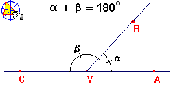 | Vedlejšími úhly nazýváme styèné úhly, jejichž nesplývající ramena jsou vzájemnì opaèné polopøímky.
|
Doplòkové úhly | |
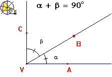 | Dva úhly jež mají spoleèné jedno rameno a jejichž grafickým souètem je úhel pravý, se nazývají doplòkové.
|
Souhlasné úhly | Støídavé úhly | |
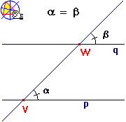 | 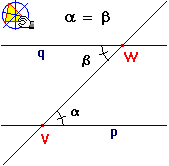 | |
| Støídavé a souhlasné úhly mají jedno spoleèné rameno a druhá ramena rovnobìžná. Velikosti støídavých i souhlasných úhlù se vždy rovnají. Rozdíl mezi tìmito typy dvojic úhlù je vidìt na obrázku.
Naleznìte souvislost støídavých a souhlasných úhlù s úhly vrcholovými.
| ||
Obvodový úhel | |
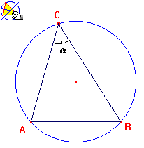 | Zobrazte si konstrukci obvodového úhlu a a pohybujte bodem C. Sledujte, jakých hodnot bude nabývat úhel a. Všimìte si, jak se mìní velikost úhlu pøi jiné délce úseèky AB. Na základì jednotlivých mìøení se pokuste formulovat obecnìjší pravidlo pro velikost obvodového úhlu.
|